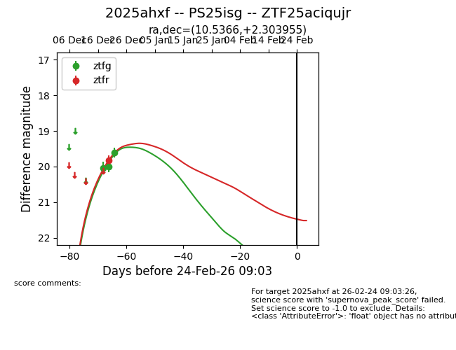
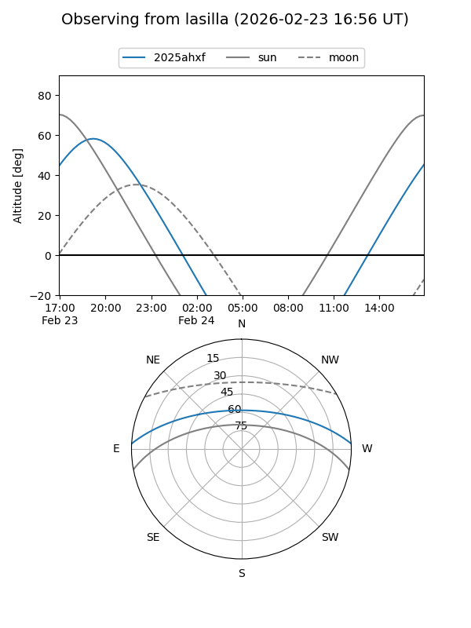
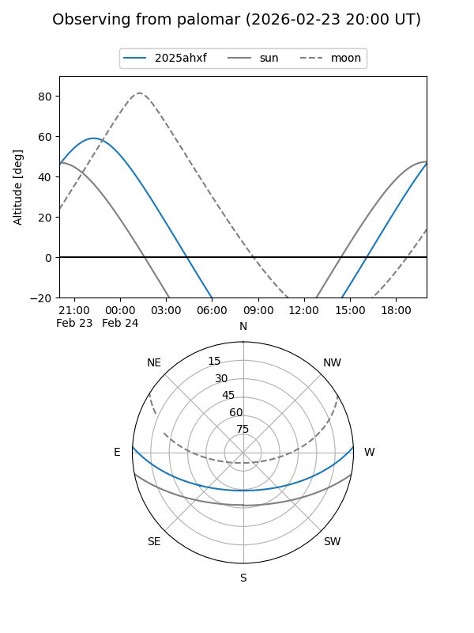

2025ahxf
Target 2025ahxf at 2025-12-31 17:00
Aliases and brokers:
FINK:
Lasair:
ALeRCE:
TNS:
YSE:
alt names
ZTF25aciqujr (ztf,fink_ztf)
2025ahxf (tns,yse)
PS25isg (panstarrs)
Coordinates:
equatorial (ra, dec) = 10.5366,+2.30395
equatorial (HMS+DMS) = 00:42:08.79,+02:18:14.24
galactic (l, b) = (118.2170,-60.48270)
Flags:
Photometry:
last ztfg=19.61, ztfr=19.83
3 ztfg, 1 ztfr detections
Lightcurve

Visibility


Additional plots